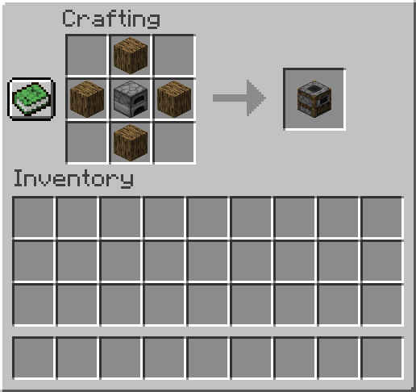

horno con la diferencia de que solo cocina comida a más velocidad.
horno con la diferencia de que solo cocina comida a más velocidad.
El ahumador hace la misma función que el horno con la diferencia de que solo cocina comida a más velocidad.
El ahumador se consigue principalmente en una  mesa de crafteo:
mesa de crafteo:

Tambien se pueden conseguir en diversas estructuras.
 Hacha de cualquier material
Hacha de cualquier material